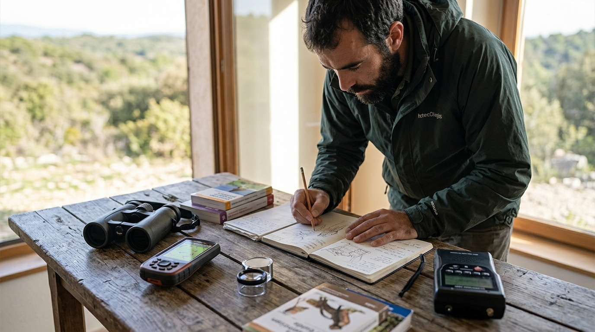

Déplacements
Véhicules tout-terrain pour le personnel et le matériel, suivis mobiles de jour comme de nuit (rapaces, chiroptères). Autres voitures et canoës en complément.
4x4Suivis mobiles de nuitCanoës
Présentation
Les équipements et moyens techniques utilisés pour les inventaires et les suivis écologiques.

L'entreprise possède le matériel adéquat pour la bonne réalisation des études.
Véhicules tout-terrain pour le personnel et le matériel, suivis mobiles de jour comme de nuit (rapaces, chiroptères). Autres voitures et canoës en complément.
Matériel dédié à l'étude des oiseaux.
Détection et enregistrement des ultrasons, autonomes ou en suivi mobile.
Dispositifs de capture et d'abris pour reptiles et amphibiens.
Prélèvement et détermination des insectes.
Documentation et coordination des équipes sur le terrain.
Application spécialement développée pour Altifaune, avec téléversement des données au réseau SINP.
Matériel informatique, logiciels et ouvrages de référence.

Des relevés saisis sur le terrain avec une application développée pour le bureau d'études, jusqu'au téléversement des données au réseau SINP : les observations sont fiables, traçables et partagées.